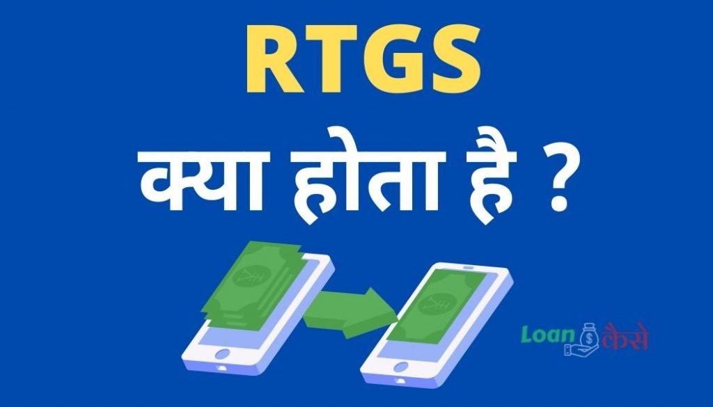

RTGS क्या है?(RTGS Meaning In Hindi):- आज हम आपको बताएंगे कि RTGS क्या होता है? दोस्तों आपको याद होगा बहुत साल पहले अगर आपको किसी व्यक्ति को उसके बैंक खाते में पैसे Transfer करने होते थे, तो आप बैंक में जाकर घंटों लाइन में लगते थे फॉर्म भरते थे तब जाकर आपके पैसे Transfer होते थे।
वैसे बैंक में तो आजकल भी लाइन लगना ही पड़ता है लेकिन बैंकिंग के सारे काम आप घर बैठे भी आसानी से कर सकते हैं जैसे अगर किसी के बैंक खाते में पैसे Transfer करना हो या कोई लोन का पेमेंट करना हो या कोई बिल पेमेंट करना हो सारे के सारे काम आप घर बैठे आसानी से कर सकते हैं।
RTGS क्या है? (What Is RTGS In Hindi)
RTGS (Real Time Gross Settlement) :- बैंक में एक बैंक खाते से दूसरे बैंक खाते में पैसे Transfer करने के लिए बनाया गया एक सिस्टम है, जिसकी मदद से आप रियल टाइम में किसी भी बैंक खाते से किसी के भी बैंक खाते में पैसे Transfer कर सकते हैं,एक बैंक खाते से दूसरे बैंक खाते में पैसे Transfer करने का यह सबसे सुरक्षित और आसान तरीका है।
आरटीजीएस (RTGS) कैसे करें?
दोस्तों अब तो आप जान ही गए हैं कि आरटीजीएस (RTGS) होता क्या है, अब आपके मन में यह सवाल आ रहा होगा कि हम आरटीजीएस (RTGS) करें कैसे ,दोस्तो आरटीजीएस (RTGS) दो तरीके से किया जाता है एक है ऑनलाइन इंटरनेट बैंकिंग के माध्यम से और दूसरा है ऑफलाइन बैंक में जाकर।
आरटीजीएस (RTGS) करने के लिए क्या-क्या चाहिए?
- आरटीजीएस (RTGS) फॉर्म चाहिए ऑफलाइन के लिए, इंटरनेट बैंकिंग सर्विस ऑनलाइन ट्रांजैक्शन के लिए।
- खाता धारक का नाम जिसे आप पैसे भेजना चाहते हैं।
- खाता धारक का अकाउंट नंबर, बैंक का नाम, (IFSC Code )आईएफएससी कोड।
- कितने पैसे भेजना चाहते हैं।
- जितने पैसे आप भेजना चाहते हैं उतने पैसे आपके बैंक खाते में होना चाहिए।
- मोबाइल नम्बर दोनों का।
इसे भी पढ़िए :-
BRKGB Internet Banking,पूरी जानकारी हिंदी में।
SBI Yono PAPL Loan क्या है?
Axis Bank Consolidated Charge क्या है?
Lien Amount क्या है? (Lien amount meaning In Hindi)
Bank साथी Application क्या है?
Online RTGS कैसे करें?
अगर आपके पास इंटरनेट बैंकिंग है तो आप घर बैठे ऑनलाइन आरटीजीएस (RTGS) आसानी से कर सकते हैं।
- आपका जिस भी बैंक में खाता हो उस बैंक का इंटरनेट बैंकिंग सबसे पहले आपको लॉगिन कर लेना है।
- उसके बाद आप जिस भी व्यक्ति को पैसे Transfer करना चाहते हैं उसे बेनेफिशरी के तौर पर अपने बैंक खाते में जोड़ना होगा।
- बेनेफिशरी ऐड कर लेने के बाद बेनेफिशरी एक्टिवेट हो जाने के बाद आप पैसे Transfer कर सकते हैं।
- अब आपको इंटरनेट बैंकिंग में लॉगिन करने के बाद फंड Transfer पर जाना है यहां आपको अपने बेनेफिशरी को Select है जिसे आप पैसे Transfer करना चाहते हैं।
- अब आपके सामने एक फॉर्म खुल जाएगा जिसमें आपको कितने पैसे भेजने हैं, कब भेजना हैं किस व्यक्ति को भेजने हैं सभी को भर के सबमिट कर देना है।
- कुछ समय बाद अगर आप सब कुछ सही सही भरे रहेंगे तो पैसा आपके बेनेफिशरी के बैंक खाते में क्रेडिट हो जाएगा।
Offline आरटीजीएस (RTGS) कैसे करते हैं?
दोस्तों जिनके पास इंटरनेट बैंकिंग नहीं है और अगर वह आरटीजीएस (RTGS) करना चाहते हैं तो उनको बैंक जाकर ही आरटीजीएस (RTGS) करना होगा इसके लिए नीचे दिए गए प्रोसेस को फॉलो करना है:-
- सबसे पहले आपका जिस भी बैंक में खाता है उस बैंक में चले जाना है.
- बैंक में जाकर आपको आरटीजीएस (RTGS) फॉर्म लेना है, उसके बाद इस फॉर्म को सही-सही भर देना है इसमें आप जहां पैसा भेजना चाहते हैं , और जिस बैंक खाते से पैसा भेजना चाहते हैं सभी डिटेल डालना होता है।
- अब आपको फॉर्म भरकर कैश काउंटर पर दे देना है।
- सारा कुछ अगर सही रहा तो कुछ समय के बाद आपके बैंक खाते में से पैसे कट जाएंगे और आप जिस व्यक्ति को पैसे भेजना चाहते हैं उस व्यक्ति के बैंक खाते में पैसे जमा हो जाएंगे।
{kind=link}

RTGS और NEFT मैं क्या अंतर है?
| RTGS (Real Time Gross Settlement) | NEFT( National Electronic Fund Transfer) | |
| Process | आरटीजीएस (RTGS) ऑनलाइन और ऑफलाइन दोनों माध्यम से आप कर सकते हैं। | एनईएफटी भी आप ऑनलाइन और ऑफलाइन दोनों माध्यम से कर सकते हैं। |
| Settlement | आरटीजीएस (RTGS) में रियल टाइम सेटेलमेंट बारी-बारी से एक-एक करके होता है। | एनईएफटी में बहुत सारे ट्रांजैक्शन को एक साथ बल्क में सेटलमेंट किया जाता है। |
| Timing | आरटीजीएस (RTGS) में कभी भी चौबीसों घंटे आप पैसे Transfer कर सकते हैं इसमें रियल टाइम सेटेलमेंट होता है। | एनईएफटी में ट्रांजैक्शन तो आप कभी भी कर सकते हैं लेकिन बेनीफिशरी के बैंक खाते में बैंकिंग आवर में जब बैंक खुले होंगे उस समय हर 1 घंटे पर सेटलमेंट किया जाता है। |
| Uses | बहुत बड़े-बड़े अमाउंट के ट्रांजैक्शन के लिए आरटीजीएस (RTGS) का यूज किया जाता है। | छोटे-छोटे ट्रांजैक्शन के लिए एनईएफटी का यूज किया जाता है |
| Amount | आरटीजीएस (RTGS) में आप दो लाख से ऊपर किसी भी अमाउंट का ट्रांजैक्शन कर सकते हैं लेकिन दो लाख से कम का ट्रांजैक्शन नहीं कर सकते है। | एनईएफटी में आप अधिक से अधिक ₹200000 और कम से कम ₹1 तक का ट्रांजैक्शन कर सकते हैं। |
RTGS शुल्क कितना लगता है?
- अगर आप ₹200000 से लेकर ₹500000 तक का ट्रांजैक्शन इंटरनेट बैंकिंग के माध्यम से करते हैं तो आपको ₹5 से ₹7 आरटीजीएस (RTGS) शुल्क देने होंगे,वहीं अगर आप यही ट्रांजैक्शन बैंक जाकर करते हैं तो आपको 25 से ₹30 का आरटीजीएस (RTGS) शुल्क देना होगा।
- ₹500000 से ऊपर किसी भी अमाउंट का ट्रांजैक्शन अगर आप इंटरनेट बैंकिंग के माध्यम से करते हैं तो आपको आरटीजीएस (RTGS) चार्ज ₹10 लगेंगे, वहीं अगर आप यही ट्रांजैक्शन बैंक जाकर करते हैं तो आपको ₹50 आरटीजीएस (RTGS) शुल्क देने होंगे।
RTGS करने के क्या फायदे हैं?
- रियल टाइम में पैसा हम कहीं भी किसी के बैंक बैंक खाते में भेज सकते हैं।
- चुकी आरटीजीएस (RTGS) आरबीआई के द्वारा कंट्रोल होता है इसीलिए यह बहुत ही रिलाएबल और सिक्योर है इसमें फ्रॉड होने का कोई खतरा नहीं होता है।
- कितने भी बड़े अमाउंट का ट्रांजैक्शन आप आरटीजीएस (RTGS) के माध्यम से चुटकी में कर सकते हैं।
- आरटीजीएस (RTGS) बिजनेसमैन के लिए काफी कारगर सर्विस है।
- चुकी आरटीजीएस (RTGS) ऑनलाइन भी किया जा सकता है इसीलिए हम किसी भी अमाउंट के पैसे को बिना बैंक गए घर बैठे ऑनलाइन इंटरनेट बैंकिंग के माध्यम से किसी के भी बैंक खाते में पैसे भेज सकते हैं।
Online या Offline RTGS करते समय किन किन बातों का ध्यान देना चाहिए?
- आपको सबसे पहले आरटीजीएस (RTGS) फॉर्म भरते समय सावधानीपूर्वक भरना है।
- जिस भी बैंक खाते में आप पैसे भेज रहे हैं उस बैंक खाते का डिटेल सावधानीपूर्वक भरना है।
- अगर आप सही सही बैंक खाते का डिटेल नहीं भरेंगे तो आपका पैसा किसी अन्य बैंक खाते में Transfer हो सकता है और आप उस पैसे को वापस भी नहीं ले पाएंगे।
RTGS की कमियां:-
आरटीजीएस (RTGS) की सबसे बड़ी कमी है कि इसका ट्रांजैक्शन अकाउंट नंबर से होता है उदाहरण के लिए अगर मोहन नाम के व्यक्ति को आपको पैसे Transfer करने हैं जिसका खाता संख्या 123456 है, तो अगर आप आरटीजीएस (RTGS) फॉर्म भरते समय खाता संख्या में 123456 डालेंगे और बैंक खाते धारक के नाम में श्याम लिख देंगे तो भी पैसा मोहन के बैंक खाते में ही जाएगा इसीलिए आपको पहले Sure हो लेना है कि जो खाता नंबर आपको दिया हुआ है वह खाता सही में उस व्यक्ति के नाम पर है या नहीं अन्यथा आप बैंक खाते धारक का नाम देखकर पैसे Transfer ना करें हो सकता है कि आप पैसे किसी को Transfer कर रहे हो और खाता किसी और का हो तो इन सब चीजों को आप को देख लेना है।
How to Download all bank RTGS Form
दोस्तों आप यहाँ किसी भी बैंक की RTGS form Download कर सकते हैं नीचे दिए गए लिंक पे क्लिक करेके आपको डाउनलोड कर लेना है उसके बाद प्रिंट कर लेना है।
RTGS Form कैसे भरें?
दोस्तों नीचे आपको सभी Banks के RTGS/NEFT form भरने के तरीक़े दिए हुए हैं :-
Axis bank RTGS form kaise bhare?
- सबसे पहले आपको बैंक जाना है और बैंक में जाकर के आरटीजीएस का फॉर्म लेना है या ऊपर दिए गए लिंक से आपको आरटीजीएस का फॉर्म डाउनलोड कर लेना है ।
- उसके बाद आप जहां भी पैसे भेजना चाहते हैं उनका बैंक अकाउंट नंबर आईएफएससी कोड दिनांक खाता नंबर सभी जानकारी डाल करके आपको बैंक में जमा कर देना।
ICICI bank RTGS Form Kaise bharen?
- सबसे पहले आपको अपने नजदीकी आईसीआईसीआई बैंक में जाना है वहां पर आपको आरटीजीएस फॉर्म लेना है।
- सबसे पहले आपको ब्रांच का नाम डालना है जिस ब्रांच में आप आरटीजीएस ट्रांजैक्शन कर रहे हैं।
- उसके बाद डेट डालना है राइट साइड में ऊपर में।
- अब आपको एनईएफटी या आरटीजीएस का अमाउंट अंक में और शब्द में दोनों में डालना है जितना अमाउंट आप भेजना चाहते हैं।
- अब आपको नहीं चाहिए चेक बॉक्स पर ठीक करना है कि आप किस तरह से अपने खाते से पैसा भेजना चाहते हैं चेक के द्वारा या नगद पैसा जमा करके या अपने अकाउंट से डेबिट करवाना चाहते हैं.
- इसके बाद आपको एप्लीकेंट का डिटेल डालना है यानी कि जो आदमी पैसा भेज रहा है उसका अकाउंट नंबर चेक नंबर चेक की तारीख एड्रेस मोबाइल नंबर आदि सभी आपको भर देना है.
- उसके नीचे आपको बेनेफिशरी यानी कि लाभार्थी का डिटेल डालना है जैसे कि उनका अकाउंट नंबर उनका बैंक का नाम उनका ब्रांच का एड्रेस इत्यादि।
- इस तरह से आप एनईएफटी या आरटीजीएस का फॉर्म भर के बैंक में देंगे तभी जाके आपका पैसा सक्सेसफुली आपके लाभार्थी के खाते में जाएगा।
Sbi(State Bank of India) RTGS Form kaise bharen?
- सबसे पहले आपके पास एसबीआई का आरटीजीएस एनईएफटी रिमिटेंट फॉर्म होना चाहिए दोस्तों एक बात आपको ध्यान रखना है कि आरटीजीएस और एनईएफटी का फ़ॉर्म एक ही होता है।
- इस फ़ॉर्म में आपको सबसे पहले ब्रांच का कोड डालना है।
- उसके नीचे राशि लिखना है जिस राशि का आप लेनदेन करना चाहते हैं।
- इसके बाद आपको अपना अकाउंट नंबर डालना है उसके नीचे सभीचार्जेज़ ज़ोरकर के पैसे लिखने हैं कि आपके खाते से कितने कटेंगे।
- अब आपको नेम ऑफ बेनेफिशरी के सामने उस व्यक्ति का नाम लिखना है जिसे आप पैसे भेजना चाहते हैं।
- उसके बाद उस व्यक्ति के बैंक का नाम और ब्रांच का एड्रेस ब्रांच नेम के साथ लिखना है।
- उसके नीचे उस व्यक्ति का आईएफएससी कोड लिखना है उसके आगे अकाउंट नंबर लिखना है जिसमें आप पैसे भेजना चाहते हैं
- उसके बाद नीचे आप अपना मोबाइल नंबर,नामऔर एड्रेस लिखें ।
- उसके नीचे सिग्नेचर करके आपको बैंक में जमा कर देना है और भंवर में बाएं तरफ का हिस्सा आपको बैंक के कर्मचारी रिसिप्ट के तौर पर दे देंगे।
Bank of Baroda RTGS form kaise bharen?
- सबसे पहले आपको सेंडर का बैंक अकाउंट नंबर नाम ब्रांच नेम ब्रांच कोड भरलेना है।
- इसके बाद जहां पैसे भेजना चाहते हैं उस व्यक्ति का अकाउंट नंबर बैंक का नाम और पता उसका आईएफएससी कोड इत्यादि भर देना है।
- और बैंक में जमा कर देना है।
PNB(Punjab National Bank) RTGS form kaise bharen?
- सबसे पहले आपको पंजाब नेशनल बैंक का आरटीजीएस एनईएफटी उपलब्ध करना है।
- उसके बाद उसमें अपना विवरण भरना है जैसे कि कितना पैसा आप भेजना चाहते हैं, आपका ब्रांच का कोड, आपका खाता संख्या, आपका मोबाइल नंबर, आपके ब्रांच का पता यह सब भर देना है।
- जितनी जानकारी आपने अपनी भरी है उतना सारे विवरण आपको उस व्यक्ति के भी भरने हैं जिसे आप पैसे भेजना चाहते हैं उसके बाद आपको बैंक कर्मी के बाद यह फॉर्म जमा कर देना है।
Central bank of India RTGS form Kaise bharen?
- सबसे पहले आपको सेंट्रल बैंक ऑफ इंडिया के शाखा पर जाना है और वहां आरटीजीएस एनईएफटी का फॉर्म लेना है।
- उसके बाद अपना और बेनेफिशरी का सभी डिटेल खाता संख्या आईएफएससी कोड मोबाइल नंबर कितना पैसा भेजना है उसकी राशि भड़कड़ आपको बैंक में जमा कर देना है आपका पैसा ट्रांसफर हो जाएगा।
FAQ (Frequently Asked Queastion )अक्सर पूछे जाने वाले प्रश्न:-
Settlement क्या होता है?
आरटीजीएस या एनएफटी के द्वारा जब पैसे ट्रांसफर करते हैं तो उस पैसे का बेनेफिशरी के खाते में भेजने की प्रक्रिया को सेटलमेंट कहा जाता है।
RTGS Timings kya hai?
आरटीजीएस 24 घंटे सातों दिन कभी भी आप कर सकते हैं बैंक के खुले या बंद रहने से आरटीजीएस ट्रांजैक्शन को कोई मतलब नहीं होता है।
Can RTGS be done from a non home branch?
आप अपने होम ब्रांच के अलावा कहीं भी आरटीजीएस ट्रांजैक्शन नहीं कर सकते हैं।
RTGS minimum amount कितना भेजना परता है ?
आरटीजीएस के माध्यम से आप कम से कम ₹200000 और अधिक से अधिक कितने भी रुपए भेज सकते हैं।
RTGS के advantages और disadvantages क्या है ?
बिना बैंक गए पैसे भेजने का यह एक सुरक्षित और सरल माध्यम है, सिर्फ इसमें इतना ही डर रहता है कि अगर आप खाता नंबर सही नहीं डालेंगे तो पैसा कहीं भी जा सकता है।
RTGS Full Form क्या होता है?
Real Time Gross Settlement
UTR Number क्या होता है ?(What is utr no in rtgs)
बैंक में ट्रांजैक्शन करने के बाद ट्रांजैक्शन को ट्रैक करने के लिए हमें एक नंबर दिया जाता है, जिसे हम यू पी आर नंबर कहते हैं।
UTR का फुल फॉर्म क्या होता है
यूनिक ट्रांजैक्शन रेफरेंस (Unique Transaction reference) नंबर.